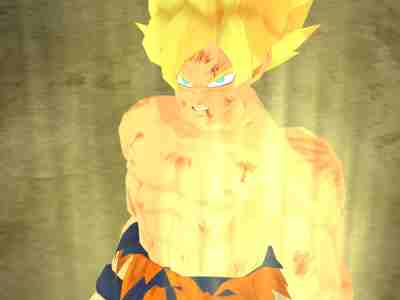
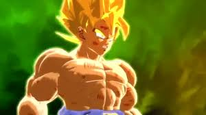

Welcome to the section of talking a bit about the games of Dragonball Z. We will talk about the newest console game first.
Dragonball Xenoverse 2 (PS4/XboxOne/PC)
In case you are confused... Yeah. This game will not help people who have not seen or did anything with the series. Xenoverse is about fixing mistakes in the Dragonball Timeline. If you want to know more I suggest trying the games I will recommend.
Dragonball Z Budokai (PS2/Gamecube /PS3/Xbox360)
Budokai has some outdated graphics, but it describes the the basic story with cutscenes and animations. If you are just starting out, I would recommend this game to get more involved and to learn about Dragonball Z. It has basic fighting mechanics. A button for a punch, a button for a kick,and a button to shoot an energy blast. It gets hard near the end of the story but it is possible to finish it with little experience.
Dragonball Burst Limit (PS3/Xbox360)
This game is slightly redone from Budokai but has more cinematics describing the story and the events that took place in the Dragonball Z world.